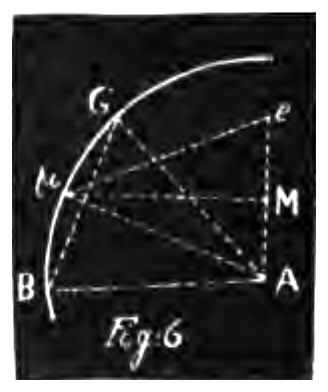
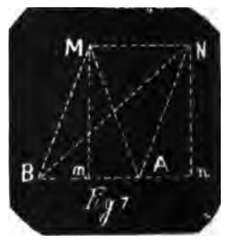
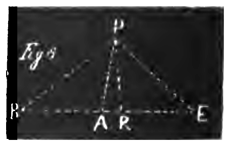

§§ 23–26: Parallelogrammi e teorema della mediana (Apollonio)¶
23. Lemma. Se si \(AB = AC = BD\); e \(AD = BC\); sarà (fig. 5) \(DC \cdot AB = (AB)^2 - (AD)^2\).
Dim. I due triangoli \(ADB\), \(ACB\); avendo i lati rispettivamente eguali, saranno eguali (8 e 26, libr. I). Essendo poi posti tutti e due sulla stessa base \(AB\); saranno fra le stesse parallele \(DC\), \(AB\) (39, lib. I). Se dunque sulla \(BA\) si prende \(BE = DC\); sarà \(DE\) uguale e parallela alla \(BC\) (33, lib. I), e uguale ancora alla \(DA\). Quindi i due triangoli isosceli \(BDA\), \(DAE\), che hanno un angolo comune in \(A\), saranno simili (5 e 32, lib. I, e 4, lib. 6.), e sarà \(AB : AD :: AD : AE\); quindi \(AB \cdot AE = (AD)^2\) (17, lib. VI). Si ha poi \(AB \cdot AE + AB \cdot BE = (AB)^2\) (2, lib. II). Quindi ad \(AB \cdot AE\) sostituendo \((AD)^2\), e a \(BE\) sostituendo \(DC\); si ha \((AD)^2 + AB \cdot DC = (AB)^2\). E sottraendo \((AD)^2\), si avrà \(DC \cdot AB = (AB)^2 - (AD)^2\).
24. Lemma. Se nel cerchio \(B\mu G\) al raggio \(AB\) si alzi nel centro \(A\) la normale \(Ae\) eguale alla corda \(BG\) dell’arco \(B\mu G\); e fatto centro in \(e\) col raggio \(AB\) si descriva un arco, che tagli la circonferenza in \(\mu\); sarà l’arco \(B\mu\) eguale alla metà dell’arco \(B\mu G\).


Dim. Per l’eguaglianza de’ lati de’ due triangoli \(ABG\), \(A\mu e\) (fig. 6) è l’angolo \(GAB = A\mu e\) (8, lib. I). Si divida per metà l’angolo \(A\mu e\) colla retta \(\mu M\); essendo isoscele il triangolo \(\mu eA\), l’angolo \(\mu eM = \mu AM\); quindi nei due triangoli \(\mu eM\), \(\mu AM\), essendo eguali tra loro gli altri due angoli, sarà anche \(\mu Me = \mu MA\) (Coroll. 32, lib. I); quindi \(\mu M\) normale alla \(Ae\) (13, lib. I), e quindi parallela alla \(AB\) (29, lib. I), e sarà l’angolo \(M\mu A = \mu AB\) (27, lib. I), sarà dunque \(\mu AB\) la metà dell’angolo \(GAB\), e però anche l’arco \(B\mu\) metà dell’arco \(B\mu G\).
f. 0047 · p. 1825. Se nel parallelogrammo \(ABMN\) sarà la diagonale \(MA\) eguale ai lati opposti \(MB\), \(AN\); sarà il quadrato dell’altra diagonale \(BN\) eguale al quadrato della prima aggiuntivi i due quadrati degli altri due lati.


Dim. Si divida \(AB\) per metà in \(m\) (fig. 7) colla perpendicolare \(Mm\) (10, 11, lib. I), e sopra la \(BA\) continuata si prenda \(An = Bm\); sarà \(mn = BA = MN\); e però \(MNnm\) parallelogrammo (33, lib. I), e sarà retto l’angolo \(NnB\) (27, lib. I). Quindi \((BN)^2 = (AB)^2 + (AN)^2 + 2AB \cdot An\) (12, lib. II). Ma \(An = \frac{1}{2} AB\). Dunque \((NB)^2 = (AN)^2 + 2(AB)^2 = (AN)^2 + (AB)^2 + (MN)^2\).
26. Se in qualunque triangolo \(BPE\) si tagli in due egualmente la base \(BE\) in \(A\), e dall’angolo opposto \(P\) si guidi la \(PA\) (fig. 8); sarà la somma de’ quadrati dei lati \(BP\) e \(PE\) eguale alla somma de’ quadrati eguali dei due segmenti, aggiuntovi il doppio quadrato della \(AP\).


Dim. Poichè se si cali il perpendicolo \(PR\) sulla base \(BE\); sarà \((BP)^2 = (BA)^2 + (AP)^2 + 2BA \cdot AR\) (12, lib. II). Sarà pure \((PE)^2 = (AE)^2 + (AP)^2 - 2AE \cdot AR\) (13, lib. II). Fatta dunque la somma dei valori dei due quadrati \((BP)^2\) e \((PE)^2\), essendo \(BA = AE\); sarà \((BP)^2 + (PE)^2 = (BA)^2 + (AE)^2 + 2(AP)^2 = 2(AB)^2 + 2(AP)^2\).